小胖 @ Apr 05, 2009
带Luke在宠物店理了发，剃了些耳朵上的毛，剪指甲修腿毛，连面孔上多余的毛也被整理掉，之后发现一颗小脑袋下拖着一个面包似的身体，他发胖了呀。怀疑宠物店是否知道如何给英卡美容？
天气骤然晴了，这次....不会再忽悠人类了吧？除了冬天幸运活下来的花草，还需要添置一些装扮这美丽的春天。
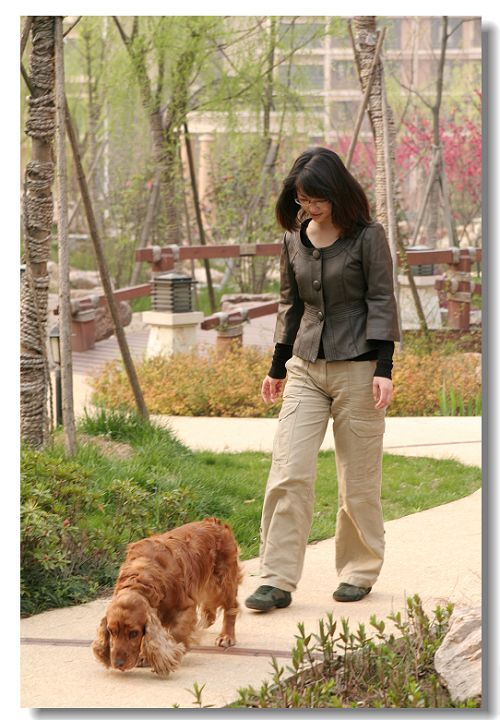
带Luke在宠物店理了发，剃了些耳朵上的毛，剪指甲修腿毛，连面孔上多余的毛也被整理掉，之后发现一颗小脑袋下拖着一个面包似的身体，他发胖了呀。怀疑宠物店是否知道如何给英卡美容？
天气骤然晴了，这次....不会再忽悠人类了吧？除了冬天幸运活下来的花草，还需要添置一些装扮这美丽的春天。

上个世纪的中国摇滚受GNRS（GUNS N' ROSES）的影响很深，GNRS被公认为最重要的摇滚乐队之一，有人说Axl Rose过了17年功成名就、衣食无忧的生活，从壮年变成了老年，头发开始白了，皱纹开始多了，体力开始衰弱了。然后，他突然宣布要从头再来，依然像年轻时那样，在舞台上大吼大跳，更难得的是，他的作品依然保持激进，散发着愤怒和不妥协。去年11月GNRS的新专辑Chinese Democracy发行以来在中国遭冷遇。
摇滚总是与与性、毒品和政治有关，西方人试图通过这些小事情来试探官方的反应，如果反应激烈，比如，如果秦刚老师说“伤害了中国人民的感情，讨厌西方摇滚歌星干涉中国内政或者中国人民对此表示强烈抗议”之类的话，那西方媒体就有文章可做了。但是秦刚老师说：“据我了解，很多人不喜欢这类音乐，因为它太嘈杂，噪音太大。我想你应该是一个成熟的成年人了吧？”对啊，俺们中国小P孩都喜欢李宇春，年轻人喜欢周杰伦，中老年人都喜欢辣妹子辣啊~
一些中国的艺术家不愿意被冠以民主宣传人的称号，拒绝高昂的报酬为专辑造势。“我打小就听枪花的音乐”一位视觉艺术家说。他非常高兴当枪花要求买那张将天安门画成游乐园，毛泽东旁边是过山车的画。接着他看过专辑的标题和歌词之后，征询了律师和合伙人的意见，最终决定拒绝乐队一万八千美元的出价。“作为中国的艺术家我们必须把承担政治风险考虑进去”北京著名吉他手之一的陈磊说。
虽然现在中国有关当局已经放宽对有争议歌手来华表演的政策，但始终对硬摇滚存有偏见。06年，滚石乐队第一次来华演出，被迫禁唱有争议的歌曲"Brown Sugar" 。有消息称：GN'R的宣传方已经取消了乐队今年在中国的两场演出。文化部已经禁止引进违反十项原则的音乐，这包括损害社会公德的音乐，可实际上，许多进入中国的音乐要么是盗版，要么通过互联网传播。吉他手陈先生说“Chinese Democracy”这个新专辑的标题证明他们对中国还不了解，这只是煽动舆论罢了。
我想你应该是一个成熟的成年人了吧？ 已经成为了文艺青年的口头禅了。英国重金属杂志《Kerrang!》出过一本重金属百科，封面上有一句话：“If it’s too loud,you’re too old!”如果你觉得它太吵，就说明你太老！
**Chinese Democracy.mp3
**歌词及翻译

Sherry上周末外出拍海棠和樱花，发来几张给我看。女性拍的PP和男性还是有区别的，非常甜美素雅，为她突飞猛进的摄影惊喜。
很喜欢她在莫愁湖公园拍的第一张“水边的垂丝海棠”，似清新水墨画，好象一碰触那些色彩就会融化了，春天在心里轻轻地挠着痒痒，怎能让人不动心？据说海棠花是一棵一棵的树哦，我以为是种在花盆里一小棵的呢。Sherry准备把南京一年四季的花卉都记录下来，做一个“金陵花事”的集锦。
这些被拍烂了的景色，仍然有动人之处，关键还是相机后面的眼睛。
Sony @200
Shot by Sherry

樱花就没那么好拍了，拍一朵海棠花还可以看细节，一朵樱花就不好看了。

*彩云之南*
Sherry拍摄于2009年春节


还是一点没变，和她拍的PP一样甜美。
Sherry于2008.11.

我有两个笑靥如花的女友，为她们拍照总是赏心悦目。
*** 2005年5月拍摄于南京

*** 2006年冬天拍摄于南京东郊
狗狗刚睡醒的样子，神奇的是酣睡中的狗狗能立刻醒来跟着主人走。
人就不行，刚睡醒怎么都要酝酿一下再翻身下床吧~
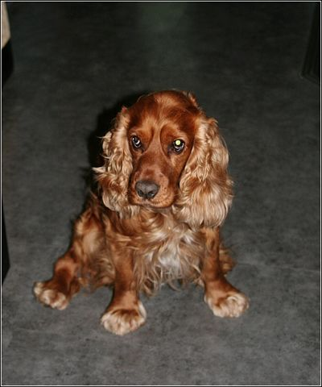
越来越有男人味儿了。

我要吃肉，我要吃肉，我要吃肉.......

既然是娱人节，就不PS掉后面的芭蕉叶了，满脸倦容，头发也没梳就起来娱乐了~

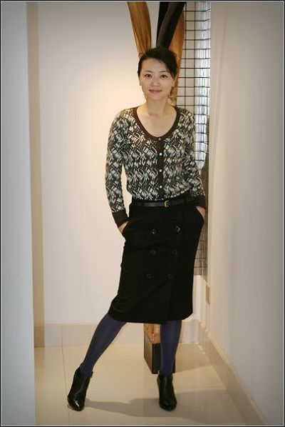
现在穿这么高的跟已经是小case啦~

这两天睡眠特别不好，睡不着还醒得早。早晨5点多就被敲门声惊醒，邻居家装修运来一车子黄沙，我的车停的不是地方。NND~惨绝人寰的装修！不是说8点才可以开始装修的吗，回到被窝里还在想要不要去物业咆哮两嗓子？
yucheng说现在遇到狮子座都绕道走，女狮子留下，男狮子就算了吧。说狮子座感情强烈、易激动好冲动，空间概念强等等，她周围可是一群狮子座男女，怎么逃得掉呢？我说你女朋友夫妻俩都是狮子，经常吵架吧？“不啊，他们很好的，一个离过婚一个大病过，懂得珍惜了。”人性不容忽视的贱，又一次暴露无疑，非要折腾到伤痕累累才知道如何表达情感。可是吃过有些星座的苦，还是绕道走比较好。
这么寂静无声的夜晚，大家都在看“毛利”吗？
明天娱人节啦，洗洗睡吧，还是被窝里春意盎然啊。

鸡蛋、蔬菜粒、豆豉、干米饭，今天的午餐。
离老头盖浇饭的水平不应太远了吧？
今天没把luke当垃圾桶，吃剩的才给它。
而是第一碗就盛给它了，吃炒饭的小狗。
我一边炒饭一边想毛利的文才真好，我这辈子就只能记记流水帐，人家靠文字混饭吃，我写blog纯粹是娱乐，平衡吧~能追着毛利迷一把，那感觉也不赖嘛。就怕这世上连个喜欢的目标都找不到，才惨呢！
天气又TMD拉着臭脸了，搞得我一点着装的创意都没有。穿了两头小，中间鼓的过膝深烟灰色羊毛裙，白色一字领毛衣，短夹克式机车皮衣，宝蓝色丝袜，黑色露脚踝短帮皮鞋。俺家人说你怎么每次都差不多的pose？“重点是搭配，不是模特，有个人穿给你看你就知足吧~”俺家人又说：“那你买个商店里的模特放家里摆拍多好。”................就这么点爱好也要被剥夺？太残忍了~
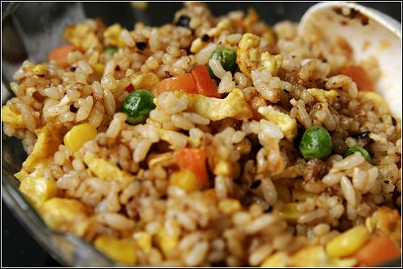
她，纯洁里流露出一点儿色情
她，叛逆里隐藏着一点儿温馨
她的博客，让人一看就会上瘾
她，就是我们欲罢不能的毛利
追她，7601是她的终生的代号
粉她，是我们（douban）小组一生的目标
又是yucheng介绍“看上去很猛”，不由想到我妈的教育，小时侯不让串门、不让吃零食，搞得现在在网络上也很少串门，活了几十年才发现吃零食的乐趣。错过多少好玩的事啊~
象关注女病人一样，在网络上搜索毛利相片，对于喜欢对象的容貌不仅仅只有异性才感兴趣吧，毛利，很符合我的审美，和她不矫情的文字很般配。如果一个女人写了一手好文，长着一张与时俱进、既妩媚又个性十足的偶像面孔，并且，她的文字里没有所谓文学女青年的拿腔捏调、矫柔造作，字句干净利索，略显阳刚之气兼有细腻敏锐犀利的表达，让我等伪文艺青年们会不顾一切爱上她！
这两天看多了欲擒故纵、犹抱琵笆半遮面的小品，乍一看到毛利的“正面大头照”，心中大叫一声“爽”，自信又勇敢的7601就这么“正面、清晰、赤裸裸的”看着你！喜欢一个人，还真是综合的，文字占主要部分之外，形象与性格恰恰符合你心中的想象又会获得更大的愉悦~

晚上到姐姐家拿药和蔬菜，回到家才发现比自己列出的蔬菜还多出好几种，有姐姐真好：）晚饭打包了马台街的老头盖浇饭，吃得那个饱啊，数了下“盖浇”有六种搭配：芹菜、包菜、胡萝卜、豆腐干、皮肚、猪肝，琢磨着什么时候自己也做一次试试。
老远看到姐姐坐在水果摊上挑东西，这些小小的草莓比大个头的草莓要好吃一百倍，尤其是姐姐亲手挑拣的。姐姐象妈妈却超越妈妈对我生活的细心关照，婆婆妈妈有什么不好？生活不就是这样婆婆妈妈才过得细致么？心情象这盆草莓一般新鲜水灵在泛着淡淡春天气息的夜晚。要是我以前也能这般体会生活就好了~

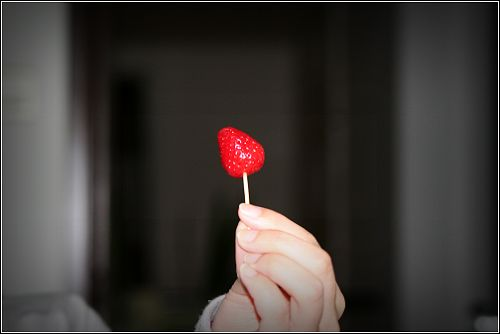
MOS的挂件，还崭新的摆放在首饰包里。
上面也有一颗漂亮的草莓。

恋人就象孩子，越被管教，越会撒谎。
越限制......越显露自己不自信。
越被粉饰的越具有一定的虚假性。
中午的千张条炖咸鸡腿肉。
注意！主要是盛菜的碗。
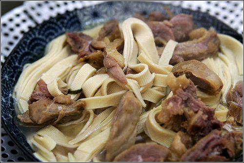
周末两天过得真是混沌，啥事没干一晃眼就过去了。星期一的早晨睡眼惺忪爬起来上班，对的，天气一下子又开朗了，只穿了羊毛裙＋长针织外套，不穿大衣也能出门。
下午，又是会议........
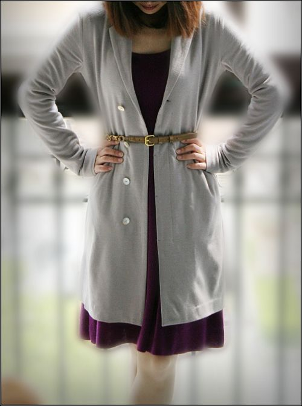
睡到下午三点才起床，躺被窝里看了两部碟：《007系列22 Quantum of Solace 》和《Seven pound》。哎呀，第二部让我抱着枕头哭地淅沥哗啦，不划算。Will smith怎么老演善良到极致的角色呢？作者说他参加party时遇到一个年轻人，表情非常悲伤，有很重的心事似的。和这个人聊到半夜，原来他遭遇一次车祸，死了7个人。回到家作者就想这是一个很好的题材，可以写成剧本。于是这部《Seven pound》就诞生了。感觉这部片子在教授自杀的人在自杀前捐献自己的器官给仍然想要生存下去的good people。我想我要是患了绝症，也捐献器官给需要的人，然后将骨灰抛洒在江河湖海，绝不在这世上占用一块土地...那么，现在除了听天由命还要尽量快乐地活着...不好，暴露故事情节看起来就不好玩了。这是感动之一；
有意思之二是每周五晚上7点多钟湖南卫视节目“天天向上”，特别好看。连续看了三周。这周选了若干北大外语女生和复旦诗社男生，归归，90后的男生女生比俺们20岁时出趟多了。当诗社男生对自己选择的北大某女生朗读名人诗词时，我浑身的毛孔象花一样绽放，有几次甚至红了眼圈....这昔日黄花也会被打动的啊，更别说那些青涩懵懂的小女生了。里面那个小主持人“欧弟”很讨喜，讨厌汪涵被众星捧月般地每每出来主持，搞得跟江湖黑社会老大似的。
有意思之三：3点起床，4点接到确认参加婚礼的电话，这已经是第二次确认是否可以在6点前到达婚礼现场。无形的压力让我出了门就拼命开，天晓得居然绕了很多路才到，连红包上都没来得及写上祝福（我是不是要告诉新郎我送了多少礼金呢？）。又一个巨大婚礼，好象有4、50桌宾客，看着当年进公司的阳光帅哥30岁后终于不再孤单，且在婚礼上何止是兴奋，简直就是亢奋....悲欢离合终有期，总有属于他的幸福到来。在他极具责任感的肩膀上又担负起一个新家庭，他的母亲、他的妹妹和他的新娘。
本打算穿这件中袖毛衣去参加婚礼，却被这副手套的质感cancel掉了。
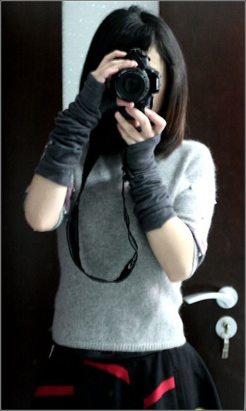
最终决定复古一把，选择了蝙蝠袖、塌肩的黑色薄毛衣+羊毛蓬蓬裙+立领肩章式修身短羊毛大衣。头发两天没洗，不蓬松啊？托人在纽约买的Coach项链，最近尤其喜欢金色饰品。
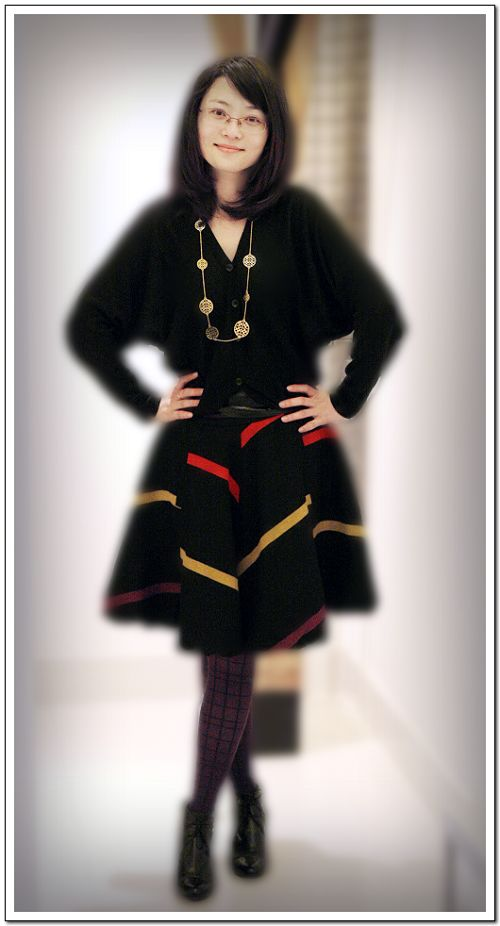
复古风的格子丝袜和高跟鞋。在上海时遇到一双灿黄的长统袜，很喜欢，可那是最后一双样品，没买。如果今天换成灿黄的样品袜，可能效果更好些？

打包了婚宴上剩下的羊肉棒给LUKE，安抚一下他独自在家的小心灵。
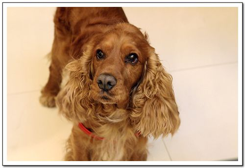
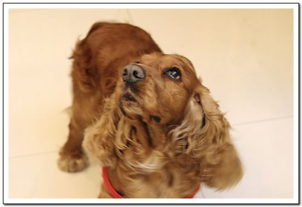